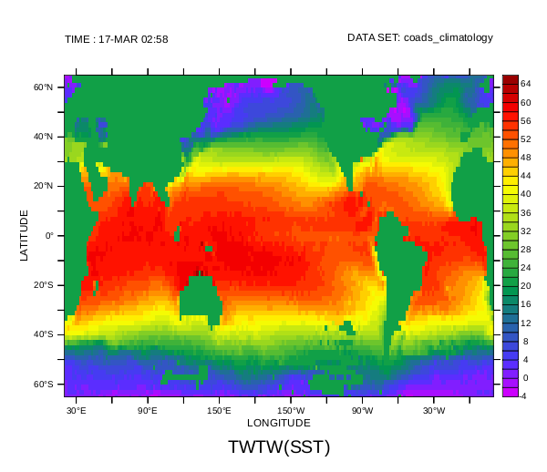
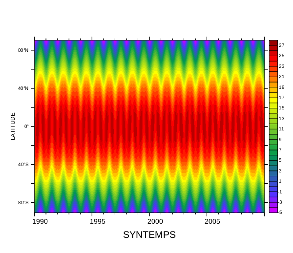

Ferret external functions written in Python (PyEFs) are simply Python scripts that define a couple of required functions, which will be discussed below. This script is placed in a directory where Python will be able to find it. This can be the directory you are working in, a directory that is listed in the environment variable PYTHONPATH (such as $FER_DIR/lib/python2.6/site-packages for Python 2.6 using the default pyferret script) or it can be one of the standard directories searche
The Ferret command DEFINE PYFUNCTION tells PyFerret to find and import the indicated Python script for use as a Ferret external function. From that point on in the session, this Ferret external function will be available for you to use. Unlike traditional Ferret external functions written in Python, there is no automatic scanning and importing of PyEFs. If you wish to always import a given PyEF, you can add the DEFINE PYFUNCTION command in your $HOME/.ferret Ferret start-up file.
A PyEF requires the two function ferret_init and ferret_compute to be defined in the Python script being used. If a new axis is used in the result array (referred to as a grid-changing function in Ferret), one of the functions ferret_custom_axes or ferret_result_limits must also be defined to describe the custom or abstra
First shown is a very simple Python script meeting the minimal requirements for a PyEF. Then a somewhat more complicated PyEF is shown in the grid-changing PyEF section.
A simple PyEF
The following is a minimal Python script for a very simple PyEF.
'''
Example Ferret external function written in Python whose result array has values
that are twice that of the argument array, where they defined, and twenty elsewhere.
'''
import numpy
import pyferret
def ferret_init(id):
'''Creates and returns the initialization dictionary for this PyEF'''
initdict = { "numargs": 1, "descript": "Returns 2 * A where A is defined, and 20.0 elsewhere" }
return initdict
def ferret_compute(id, result, result_bad_flag, inputs, input_bad_flags):
'''Performs the computation for this PyEF'''
badmask = ( numpy.fabs(inputs[pyferret.ARG1] - input_bad_flags[pyferret.ARG1]) < 1.0E-5 )
goodmask = numpy.logical_not(badmask)
result[badmask] = 20.0
result[goodmask] = 2.0 * inputs[pyferret.ARG1][goodmask]The ferret_init function returns a dictionary that defines properties of the PyEF. At a minimum, the key "numargs", whose value is the number of arguments expected by the function, and the key "descript", whose value is a function description shown to the user, must be defined in the dictionary. A number of other key:value pairs can be given customized the function further, and are described in the
, and the missing values for each of the input argument arrays is <i>input_bad_flags</i>. In this trivial example, NumPy logical arrays are created to identify array locations where the (first, and only) argument data is missing and where da
<p>In a Ferret session in PyFerret, one can then use this script, saved as twiceortwenty.py, as a PyEF as follows:</p>
<pre>
! Create the PyEF function TWTW using the Python script twiceortwenty.py
def pyfunc /name=twtw twiceortwenty
! The following description was created from the dictionary of information
! returned by the ferret_init function in the twiceortwenty.py script.
! The default argument names are A, B, ...
show func twtw
TWTW(A)
Returns 2 * A where A is defined, and 20.0 elsewhere
! Use the function and plot the results
use coads_climatology
let twtwsst = twtw(sst)
! Plot some of the data, using the system's arial font for text,
! and save as a small PNG image.
set text /font=arial
shade twtwsst[Y=65S:65N,T=17-MAR]
frame /file=twtwsst.png /xpixels=600</pre><p>The following image is what was saved from the above:<br /></p>
<p>
<a name=){kind=link}
A grid-changing PyEF
The following example shows a somewhat more complicated PyEF in which the fourth axis of the result is a frequency axis instead of the time axis given in the argument.
'''
FFT of a real 4D space-time grid to give a 4D space-frequency grid.
The results are returned in a single array, as (freq[i].real, freq[i].imag)
pairs of the non-negative frequencies. Uses a custom axis for the frequencies.
'''
import numpy
import numpy.fft as fft
import pyferret
def ferret_init(id):
'''Creates and returns the initialization dictionary for this PyEF'''
retdict = { "numargs": 1,
"descript": "FFT of X,Y,Z,T to return X,Y,Z,(F.real,F.imag) of non-neg freqs",
"axes": (pyferret.AXIS_IMPLIED_BY_ARGS, pyferret.AXIS_IMPLIED_BY_ARGS,
pyferret.AXIS_IMPLIED_BY_ARGS, pyferret.AXIS_CUSTOM),
"argnames": ("A",),
"argdescripts": ("X,Y,Z,T data with a regular bounded time axis",),
"influences": ((True,True,True,False),),
}
return retdictAgain, the ferret_init function returns a dictionary that defines properties of the PyEF. In addition to providing the expected number of arguments with the "numargs" key and a function description with the "descript" key, the source of the result axes are given by the "axes" key, the argument names are explicitly named by the "argnames" key, and description of each argument is given with the "argdescripts" key
Continuing the above Python script, the ferret_custom_axes function is defined:
def ferret_custom_axes(id):
'''Defines the frequency axis (derived from the time axis)'''
# Get the number of steps along the time axis of the first argument
# and check for some common errors
axis_info = pyferret.get_axis_info(id, pyferret.ARG1, pyferret.T_AXIS)
ntime = axis_info.get("size", -1)
if ntime < 0:
raise ValueError("The time axis is not bounded (not pre-defined)")
if ntime < 4:
raise ValueError("Unexpectedly small number of time steps (
regular = axis_info.get("regular", False)
if not regular:
raise ValueError("The time axis is not a regularly-spaced axis")
# The result will have (ntime // 2 + 1) complex values
# (only the non-negative frequencies are returned).
# The values are returned as the real (at 0.0, 1.0, 2.0, ...),
# then imaginary (at 0.5, 1.5, 2.5, ...) components.
low = 0.0
high = (ntime // 2) + 0.5
delta = 0.5
unit_name = "freqnum"
is_modulo = False
# The first three axes are inherited from the argument(s)
# so None is given for their descriptions.
#
# The fourth axis goes from low to high, with increments
# of delta, and units given by unit_name. It is not a
# modulo axis since is_modulo is False.
return (None, None, None, (low,high,delta,unit_name,is_modulo))The ferret_custom_axes function defines all axes that were designated as AXIS_CUSTOM by ferret_init. In this case, only the fourth axis needs to be defined. The get_axis_info function is used to obtain a dictionary of information about the T_AXIS of ARG1, primarily to get the number of time steps in the argument. The function returns a four-tuple of values, one element for each axis of the resul
Now that the result axes are all defined, the ferret_compute function can be defined. Continuing the above Python script:
def ferret_compute(id, result, result_bad_flag, inputs, input_bad_flags):
''' Assigns result with the fft, as (real,imaginary) pairs, of the first inputs array along the time axis. '''
ntime = inputs[pyferret.ARG1].shape[pyferret.T_AXIS]
nfreq = (ntime // 2) + 1
# find locations that have values at every time step
inpdefd = ( numpy.fabs(inputs[pyferret.ARG1] - input_bad_flags[pyferret.ARG1]) >= 1.0E-5 )
defdmask = numpy.logical_and.reduce(inpdefd, axis=pyferret.T_AXIS)
for t in xrange(ntime):
inpdefd[:,:,:,t] = defdmask
# convert to space-time (a 2-D array), eliminating locations with missing time steps
spacetime = inputs[pyferret.ARG1][inpdefd].reshape((-1, ntime))
# do the FFT along the time axis (the second axis of spacetime)
spacefreqs = fft.rfft(spacetime, axis=1)
if spacefreqs.shape[1] != nfreq:
raise ValueError("Unexpected shape of the frequencies returned from rfft:
# fill results with the real and imaginary parts of the frequencies
for f in xrange(nfreq):
result[:,:,:,2*f][defdmask] = spacefreqs[:,f].real
result[:,:,:,2*f+1][defdmask] = spacefreqs[:,f].imag
# assign the result bad value to positions not assigned
undefdmask = numpy.logical_not(defdmask)
for f in xrange(2*nfreq):
result[:,:,:,f][undefdmask] = result_bad_flag[0]After removing any locations with missing time steps, this function performs the Fast Fourier Transform of the real data by using the rfft function in the numpy.fft module. The resulting frequencies are then assigned to the appropriate locations in the result array, and unassigned locations are assigned the result's missing value.
This completes the Python script, which if saved as pyfft.py, can be used in a Ferret session in PyFerret as follows:
! define the PyEF pyfft using the pyfft.py script def pyfunc pyfft ! the function and argument descriptions are generated ! from the information returned in ferret_init show func pyfft PYFFT(A) FFT of X,Y,Z,T to return X,Y,Z,(F.real,F.imag) of non-neg freqs A: X,Y,Z,T data with a regular bounded time axis ! Define an ordinary latitude axis on Y def axis /y=90S:90N:1 stlat ! Create a regular time axis over a twenty-year period def axis /t=1-jan-1990:1-jan-2010:1 /unit=day /t0=1-jan-1990 /edges sttime ! Synthesize some temperature data with using cosine functions of time let /title="SYNTEMPS" syntemps = \ 27 * cos(Y[gy=stlat] * 3.141592653 / 180.0) \ - 0.05 * Y[gy=stlat] * cos(T[gt=sttime] * 2 * 3.14159265 / 365.2425) \ + 0.03 * (abs(Y[gy=stlat]) - 90.0) * (cos(T[gt=sttime] * 2 * 3.141592653 / 365.2425))^2 show grid syntemps ...... ! plot the synthesized temperatures set text /font=arial shade syntempsframe /file=syntemps.png /xpix=600 ! compute the frequencies from the synthetic tempartures let /title="SYNFREQS" synfreqs = pyfft(syntemps) ! the Y axis of the result was inherited from syntemps, ! but the T axis is a new axes generated from the information ! returned by ferret_custom_axes sh grid synfreqs ...... ! in a new window plot the real parts of the first 61 frequencies at 60S on the left side of the page set win 2 set view left plot /vlimit=-4000:32000:4000 synfreqs[Y=60S,T=0.0:60.0:1.0] ! plot the real parts of the first 61 frequencies at 20N on the right side of the page set view right plot /vlimit=-4000:32000:4000 synfreqs[Y=20N,T=0.0:60.0:1.0] ! save the image frame /file=synfreqs.png /xpix=600
The synthesized temperatures plot show the sinusoidal behavior with respect to both latitude and time:

The frequencies plot show a strong zero-frequency (peaks are truncated in these plots) due to the baseline value that does not depend on temperature (the cos(Y) term), then an annual frequency that varies with latitude, vanishing at the equator (the Y * cos(T) term, showing up at 20.0 for this 20-year collection of data), and finally a negative semiannual frequency that varies with latitude and is strongest at the equator (the (|Y| - 90) * cos²(T) term, showing up at 40.0):
ferret_init
The ferret_init function of a PyEF has the following signature:
- ferret_init(id)
The argument of the the function is:
- id
- Ferret's identification number for this external function
This functions returns a dictionary defining the following keys:
- "numargs"
- the number of input arguments (referred to a N below), an integer value from one to nine (required)
- "descript"
- a string description of the function (required)
- "restype"
- the type of the result (optional; the default is FLOAT_ARRAY.This result type value is one of:
- FLOAT_ARRAY
- an array of floating-point values
- STRING_ARRAY
- an array of string values
- "resstrlen"
- the maximum length of the strings if the result type is an array of strings(optional; the default is 128)
- "axes"
- six-tuple (X,Y,Z,T,E,F) axis definitions for the grid of the result array(optional; the default is a six-tuple of AXIS_IMPLIED_BY_ARGS). These axis definition values are one of:
- AXIS_IMPLIED_BY_ARGS
- result axis is the same as the corresponding axis in one or more arguments (default)
- AXIS_ABSTRACT
- result axis is an indexed axis whose limits are obtained by calling ferret_result_limits
- AXIS_CUSTOM
- result axis is a custom axis defined by calling ferret_custom_axes
- AXIS_DOES_NOT_EXIST
- axis does not exist in (is normal to) the results
- AXIS_REDUCED
- axis is reduced to a single point in the result
- "argnames"
- an N-tuple of names for the input arguments (optional; the default is ('A', 'B', 'C', ...),an N-tuple of single capital letters)
- "argdescripts"
- an N-tuple of descriptions for the input arguments (optional; the default is an N of empty strings,thus giving no argument descriptions)
- "argtypes"
- an N-tuple of argument types (optional; the default is an N-tuple of FLOAT_ARRAY).These argument types are one of:
- FLOAT_ARRAY
- an array of floating-point values
- FLOAT_ONEVAL
- a single floating-point value
- STRING_ARRAY
- an array of string values
- STRING_ONEVAL
- a single string value
- "influences"
- an N-tuple of six-tuples of booleans indicating whether each of the corresponding input argument's(X,Y,Z,T,E,F) axis influences the result grid's (X,Y,Z,T,E,F) axis (optional; the default is True for everyaxis of every argument). If None is given for an argument's six-tuple, then True is assumes for everyaxis of that argument.
NOTE: If the "influences" value for an axis is True (which is the default),the "axes" value for this axis must be either AXIS_IMPLIED_BY_ARGS (the default)or AXIS_REDUCED - "extends"
- an N-tuple of six-tuples of pairs of integers (optional; the default is no extensions applied).Each six-tuple gives the (X,Y,Z,T,E,F) extension pairs for the corresponding argument.Each extension pair is the number of values to extend in the low and high indices of the axisbeyond that of the implied axis of the result. If a extension pair is None, no extensions are madefor that axis. If a six-tuple is None, no extensions are made for that argument.Thus, (None, (None, None, None, (-1,1)), None) me NOTE: If an "extends" pair is given for an axis, the "axes" value for this axis mustbe AXIS_IMPLIED_BY_ARGS (the default value). The "extends" pair means more precisely that theaxis in the argument, exactly as provided in the Ferret command, is larger by the indicated amountfrom the implied axis of the result.
- "piecemeal"
- a six-tuple of booleans indicating whether the calculation can be broken up along the corresponding axisif necessary. In other words, if Ferret need to perform the calculation a piece at a time (probably due tomemory restrictions), this indicates which axes can split into pieces with separate calls on each pieceto perform the calculation. The default is False (no splitting allowed) for all axes.
ferret_compute
The ferret_compute function of a PyEF has the following signature:
- ferret_compute(id, result, result_bad_flag, inputs, input_bad_flags)
The arguments of the the function are:
- id
- Ferret's identification number for this external function
- result
- a writeable NumPy array of six dimensions (X,Y,Z,T,E,F) to contain the results of this computation.The shape and strides of this array has been configured appropriately for this result.
- result_bad_flag
- a NumPy array of one dimension (and one value) containing the bad-data-flag value for the result array.(This bad-data-flag value is contained in a NumPy array to ensure the data type is identical to that of the result array.)
- inputs
- a tuple of read-only NumPy arrays of six dimensions (X,Y,Z,T,E,F) containing the given input data. The shapes and strides of these array have been configured appropriately for each input array.
- input_bad_flags
- a tuple of NumPy arrays of one dimension (each containing one value) containing the bad-data-flagvalue for each of the input arrays. (These bad-data-flag values are contained in a NumPy arrays to ensurethe data type is identical to that of the corresponding input array.)
Any return value is ignored. If an error is identified, an exception should be raised with aninformative message (for example, raise ValueError("The time axis is not a regularly-spaced axis")). If an exception is raised, Ferret is notified that an error occurred. The message of the exceptionobject will be used as the error message sent to Ferret.
ferret_custom_axes
The ferret_custom_axes function of a PyEF has the following signature:
- ferret_custom_axes(id)
If the dictionary returned from ferret_init assigned a result axis as AXIS_CUSTOM, then the ferret_custom_axes function must also be defined. This function is used to defined all the axes that were designed as custom axes.
The argument of the the function is:
- id
- Ferret's identification number for this external function
This function should return an (X, Y, Z, T, E, F) six-tuple of data values describing each of the custom axes. The data value for each custom axis is a (low, high, delta, unit_name, is_modulo) tuple where:
- low
- the smallest "world" (floating-point) coordinates for this axis
- high
- the largest "world" (floating-point) coordinates for this axis
- delta
- the axis step increment in "world" (floating-point) coordinates for this axis
- unit_name
- a string used in describing the unit value of the "world" coordinates
- is_modulo
- indicates whether or not the axis is a modulo ("wrapping") axis
If an axis was not designated as AXIS_CUSTOM, then None should be given in the six-tuple for the data value for that axis.
ferret_result_limits
If the dictionary returned from ferret_init assigned a result axis as AXIS_ABSTRACT, then the ferret_result_limits function must also be defined. This function is used to defined all the axes that were designed as abstract axes.
The ferret_result_limits function of a PyEF has the following signature:
- ferret_result_limits(id)
The argument of the the function is:
- id
- Ferret's identification number for this external function
This function returns an (X, Y, Z, T, E, F) six-tuple of data values describing each of the abstract axes.The data value for each abstract axis is a (low, high) pairs of integers, which specify the low and highFerret indices for that axis. The indices for this axis in the result NumPy array to be assigned, however,will range from zero to (high - low).
If an axis was not designated as AXIS_ABSTRACT, then None should be given in the six-tuple for the data value for that axis.